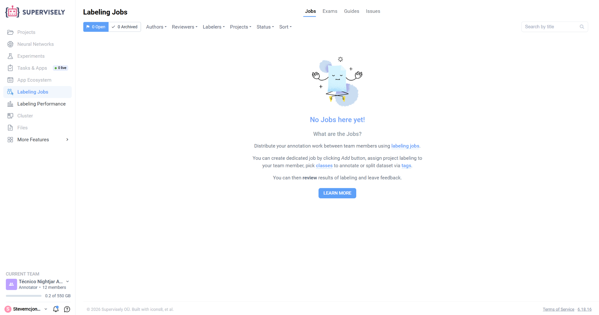
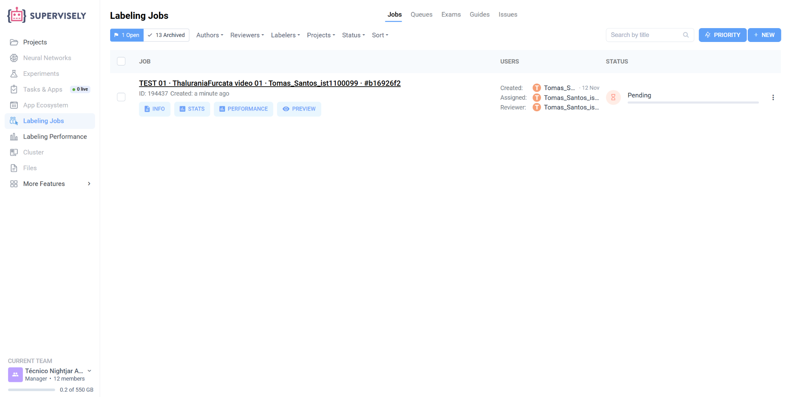
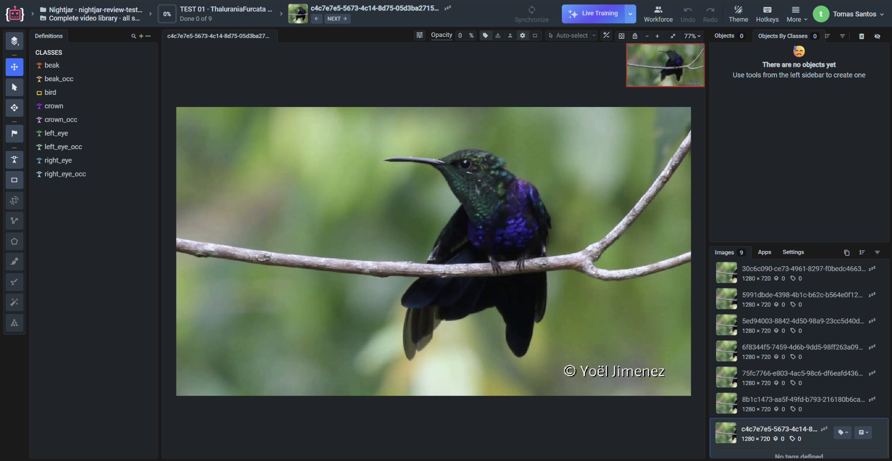
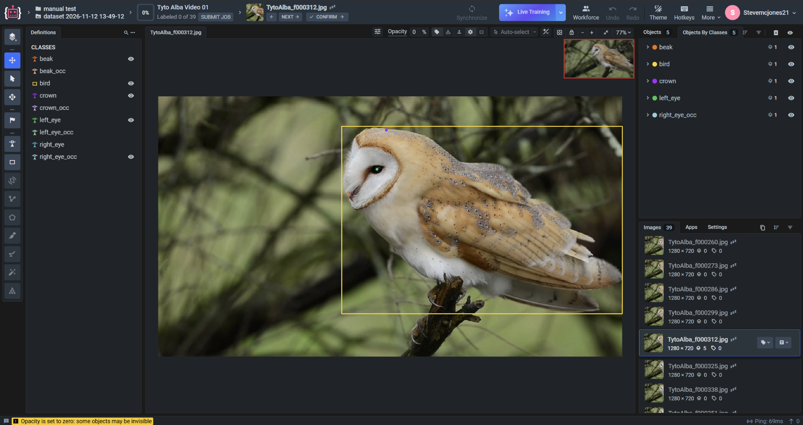
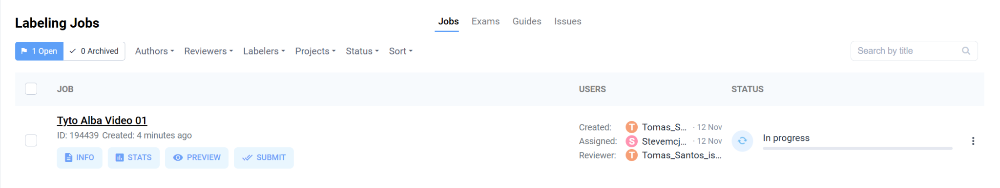

The event in four steps
Your mission is simple: find your assigned images, place the correct annotations, finish every frame, and submit your job.
Where you work: Everything you need to annotate is in Supervisely. Keep the Avian Pose Atlas open as a reference when useful.
Arrive, check in, sign in
Event staff will check you in and confirm your team's table number. If your teammate arrives later, they will be directed to the same table.
Use the invitation provided by the organisers and sign in with your own Supervisely account. If you have not received access, tell a monitor.
Go to app.supervisely.com, choose the event team and open Labeling Jobs from the left sidebar. Only open jobs assigned to you; do not create new ones.

Two people, one team result
👤 Your own work
Each person uses their own Supervisely account and receives their own assigned jobs. Do not use your partner's login or change someone else's job.
🤝 One shared score
You compete as a two-person team. Your successful annotations and your teammate’s successful annotations add up to one team score.
Your jobs usually contain 30 consecutive image frames. A job may finish one video and then begin another, so some images can suddenly look different. Just label each image you receive.
Find and open your job
Even though the dataset comes from bird videos, you will annotate individual still frames inside Supervisely Labeling Jobs.
Look for the job assigned to your own Supervisely account.
Select it to enter the annotation screen. You should see a collection of frames/images to work through.
Annotate each frame, save/mark it finished in the interface, and move to the next one. Check the job's progress before submitting.


What exactly do you mark?
For each bird, use the correct bird bounding box class and the four head landmarks required by the event.
Mark the centre of the bird’s own left eye — even if it appears on the right of your screen.
Mark the centre of the bird’s own right eye, using the correct left/right label.
For a straight beak, mark the bill tip. For a hooked beak, mark the most forward bend of the upper bill, not the downward-pointing hook tip.
Mark the top of the feathered head, following the bird’s head shape.
Draw a reasonably tight rectangle around the visible bird. Include the visible body, not just the head.
Left and right always refer to the bird's body, even when the bird faces toward you or away from you.
Use the normal class when the feature is visible. Use the matching _occ class only when the feature is hidden but you can still place it confidently.
Every frame is different. Use this example to understand what kinds of annotations to place, not to copy the same positions onto another bird.
Curved or hooked beaks: where is the point?
For an owl, hawk or other hooked-beak bird, put the beak keypoint on the most forward bend of the upper bill — where the upper edge curves downward. Do not place it at the lowest tip of the hook.
Mark the visible tip of the upper bill.
Mark the forward bend of the upper bill, above the hanging tip.

See the anatomical reference too: the Owl model in the Atlas section shows the curved upper bill clearly, and the Pigeon model shows a straight beak for comparison.
For unfamiliar bird species: use the same four anatomical points. The Atlas is a reference for understanding head orientation, not a claim that every bird has pigeon or owl anatomy.
Annotate one frame at a time
Find the bird and the direction its head is facing. Zoom in when necessary so you can place points accurately.
Select the event's bird box class and fit the rectangle around the bird.
Choose the correct class for each point and click precisely where it belongs. Use the _occ version only for a truly hidden but reasonably locatable point.
Check the box and points, make sure your work is saved, then click CONFIRM at the top of the screen. After that, use NEXT or the image list to continue.
Very important: every time you finish annotating an image, click CONFIRM. Do not leave an image unconfirmed.
Zoom in for small landmarks. Keep eye labels anatomically correct. Correct mistakes before moving on. Use the 3D atlas when unsure about head pose.
Random point placement, swapping left/right, selecting _occ just because a class exists, skipping frames, or submitting a job you have not checked.
Use the Avian Pose Atlas
The Avian Pose Atlas is the interactive 3D reference built into this guide for participants and monitors. Use it when you are uncertain where a landmark belongs or how head rotation changes the view.
Open the interactive Atlas here
Use it to rotate a bird head and compare landmark locations. The viewer opens here without a separate file.
Open the interactive 3D AtlasSelect the model that best helps you understand the head shape.
Drag to rotate, or choose Front, Left lateral, Right lateral, Dorsal, Ventral, Rear or Three-quarter. The yaw, pitch and roll controls allow precise changes.
Toggle the external head and skull separately to understand where the four markers sit. Show the landmark labels or connections if useful.
The atlas shows left eye, right eye, beak landmark and crown apex. Remember: the owl reference puts the beak marker at the upper-bill hook, not the lowest tip.
Submit only when complete
Your assigned job usually has 30 frames (sometimes fewer). Finish every image in that job, and make sure each one was confirmed, before submitting.
After annotating an image, click CONFIRM at the top of the workspace. Repeat this for every frame in the job.
Before submitting, make sure the job shows that all images are finished. If something is missing, return to that image first.
Go back to Labeling Jobs and click the SUBMIT button only when the job is complete.
Return to Labeling Jobs to find your next assigned job. You do not need to wait for your score to appear.

↩️ If your job was incomplete
If a job appears again because it was not finished, open it, complete the missing images, click CONFIRM on each remaining image, and then submit it again.
📬 If you do not see a new job
Check Labeling Jobs → Open and refresh once. If nothing appears, ask a monitor. Do not create your own job.
How the winners are decided
Keep it simple: the winning team is the team with the most correctly annotated images. Both teammates contribute to the same team result.
What matters most
- Annotate carefully: correct images help your team.
- Finish your assigned work: incomplete or careless work does not help your team win.
- Check before submitting: make sure each image is fully and correctly annotated.
- Work consistently as a pair: both teammates contribute to the final result.
Best strategy: focus on accuracy first, then speed. A correct image helps your team more than a rushed image with mistakes.
Quick answers
I cannot see the event team or my labeling job.
Confirm that you are signed in to your own Supervisely account and that the correct event team is selected at the lower left. Open Labeling Jobs → Open. If nothing appears when you expect a job, tell a monitor.
Can my teammate and I share one account?
No. Each participant must use their own Supervisely login and annotate their own assigned jobs. Your points are combined at team level.
Why are some frames from another video?
Jobs are made from 30 consecutive frames of the event's combined video stream. A job can cross a video boundary. This is normal: annotate each image shown.
What if I cannot clearly see an eye or other landmark?
Check the Avian Pose Atlas to understand the head orientation. Use an _occ class only for a genuine occlusion with a defensible location. If the frame is too ambiguous, ask a monitor rather than inventing a location.
What if I click submit before finishing every frame?
Open the job again if it is returned to your Open jobs list, complete the unfinished frames, and submit it again. Always check the finished-image count first.
Do I need to wait for a monitor to review each job?
No. After submitting a complete job, keep an eye on Labeling Jobs for the next assignment.
Where do I get food/drink tickets or find activities?
Ask the event staff at your table or a monitor. They can help with activities, food and drink tickets.
What if Supervisely freezes, my internet stops, or something looks wrong?
Check whether your last changes were saved. Do not open duplicate jobs or repeatedly submit. Ask a monitor for help and show them the job title. Keep passwords private.
Your 20-second checklist
Check these every time, especially on a fast-moving job.
These checkboxes are just reminders on this page; they do not change your Supervisely job.
↑ Back to top